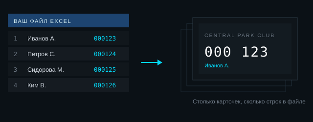
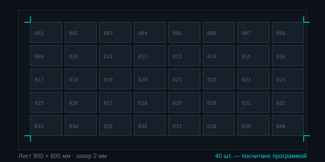
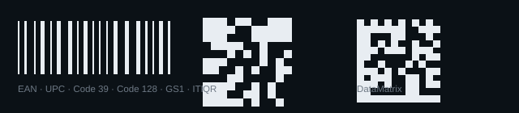
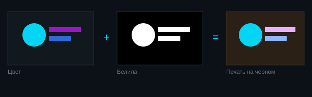
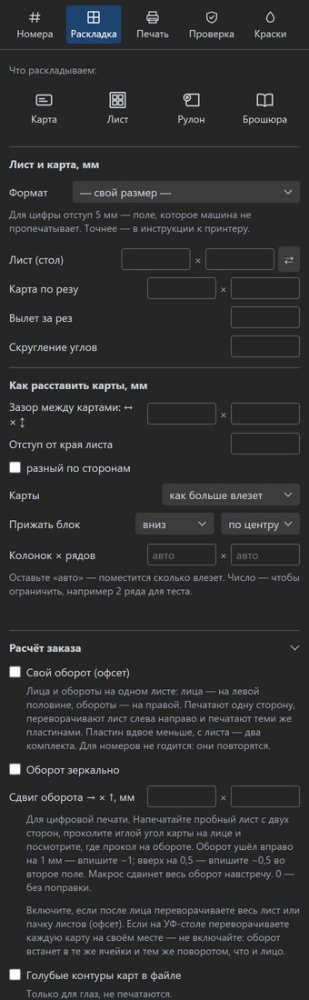

Номера, данные из Excel, штрихкоды, раскладка на лист, белила и лак под УФ и DTF — программа делает это сама, внутри CorelDRAW. Вручную такой тираж занимает вечер.
Четыре вещи, которые обычно делают руками.
Номера, имена и коды берутся из вашего файла Excel или CSV и подставляются в каждый экземпляр.

Задаёте формат и зазоры — программа расставляет изделия, считает количество и ставит метки реза.

Штрихкоды, QR и DataMatrix строятся прямо в CorelDRAW, в нужном размере и сразу читаемые сканером.

Для печати на тёмном и прозрачном программа готовит белила, а для рельефа — лак. В макете их отмечают своим слоем или своим плашечным цветом: как принято у вас. Подложка белил делается по контуру рисунка и чуть меньше него, чтобы белое не выглядывало из-под краски.

Вещи, из-за которых обычно переделывают весь заказ.

Подписка на месяц. Установку и первый тираж проходим вместе.
Пробный ключ на неделю, со всеми возможностями. Пройдём ваш настоящий заказ — и будет видно, стоит ли оно того.
Взять на пробуПрограмма сделана под CorelDRAW 2026 на Windows. На других версиях не проверялась — напишите, посмотрим вместе.
Ничего дополнительного. Программа сама собирает готовый TIFF: цвет в CMYK и отдельные каналы белил и лака. Имена каналов задаются в панели — такие, какие ждёт ваша программа печати. Photoshop не нужен.
Сама, через интернет. Новая версия скачивается и встаёт, когда вы закроете CorelDRAW. Переустанавливать и что-то скачивать вручную не нужно.
В панели есть кнопка «Показать, как работать»: она проводит по шагам — от образца карточки до готовых файлов, подсвечивая нужную кнопку. Плюс установку и первый тираж проходим вместе.
Ключ привязан к одному компьютеру. На второй выдаётся отдельный ключ — напишите, договоримся.
В панели есть кнопка «Скопировать отчёт о проблеме»: она собирает, что вы нажимали и что ответил макрос. Присылаете — я разбираюсь.